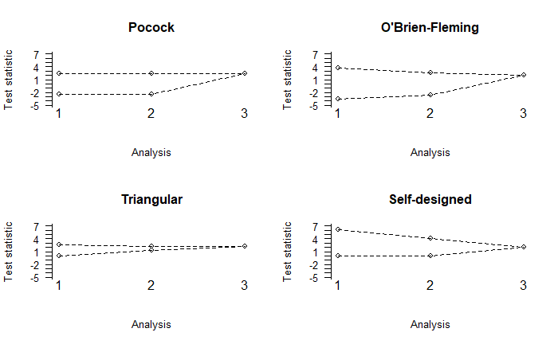

Multi-stage design
multi-stage_design.RmdIntroduction
Since only a single stage was used in this initial example, no form
of the boundaries had to be specified. For multi-stage designs the shape
of the lower and upper boundary can be defined via the arguments
lshape and ushape. These arguments can either
invoke the pre-defined shapes following (POCOCK 1977), (O’Brien and Fleming
1979) or the triangular test (Whitehead 1997) using options
"pocock", "obf", or "triangular",
respectively. Alternatively a constant value (option
"fixed") can be specified. Finally, custom boundaries can
be defined as a function that requires exactly one argument for the
number of stages and returns a vector of the same length. The lower
boundary shape must be non-decreasing while the upper boundary shape
must be non-increasing to ensure reasonable trial designs are found.
Multi-stage designs with different boundary shapes
In the following example we calculate a two-stage design
investigating three experimental treatments. Triangular boundaries are
used with a cumulative sample size ratio of r=1:2 between
first and second stage, i.e., the interim analysis is scheduled after
half of the maximum number of patients have been recruited and their
outcome observed, and twice as many subjects on control as on the
experimental arms, as specified by r0 = c(2, 4).
m2 <- mams(K = 3, J = 2, p = 0.65, p0 = 0.55, r = 1:2, r0 = c(2, 4), alpha = 0.05,
power = 0.9, ushape = "triangular", lshape = "triangular")
m2## Design parameters for a 2 stage trial with 3 treatments
##
## Stage 1 Stage 2
## Cumulative sample size per stage (control): 76 152
## Cumulative sample size per stage (active): 38 76
##
## Maximum total sample size: 380
##
## Stage 1 Stage 2
## Upper bound: 2.359 2.225
## Lower bound: 0.786 2.225The cumulative sample sizes at stages 1 and 2 are given in tabular form in the R output. The trial may be stopped after the first analysis, either for futility (if all the \(Z\) statistics are less than 0.786) or superiority (if at least one \(Z\) statistic exceeds 2.359). In all other cases the trial is to be taken to the second stage where additional patients are randomized to any experimental treatment whose \(Z\) statistic falls between the boundary values of the first stage and control. A critical value of 2.225 is used at the second analysis to decide whether a treatment shall be deemed superior to control or not.
Our next example involves three treatment arms in a three-stage
design with equal numbers of subjects added at every stage as well as
balance of sample size between control and treatment groups; this
requires us to specify the cumulative sample sizes as r=1:3
and r0=1:3. To illustrate the versatility of the function
mams, we do not use any of the pre-defined boundary shapes.
Instead we implement a fixed lower bound of zero (with
lshape = "fixed" and lfix = 0) and an upper
boundary where the first-stage critical value is three times as large as
the final critical value. To achieve this, ushape is
specified as a function that returns the vector (3, 2, 1)
(return(x:1)).
m3 <- mams(K = 3, J = 3, p = 0.65, p0 = 0.55, alpha = 0.05, power = 0.9, r = 1:3,
r0 = 1:3, ushape = function(x) return(x:1), lshape = "fixed", lfix = 0)
m3## Design parameters for a 3 stage trial with 3 treatments
##
## Stage 1 Stage 2 Stage 3
## Cumulative sample size per stage (control): 27 54 81
## Cumulative sample size per stage (active): 27 54 81
##
## Maximum total sample size: 324
##
## Stage 1 Stage 2 Stage 3
## Upper bound: 6.124 4.083 2.041
## Lower bound: 0.000 0.000 2.041The maximum total sample size is considerably lower than with design
m2 (324 versus 380), and so is the critical value at the
final stage (2.042 versus 2.225). These feigned advantages come,
however, at the cost of very large upper boundary values at stages 1 and
2 (6.125 and 4.084) that make it extremely hard to stop the trial early,
so this is unlikely to be a useful design in practice. On a related
note, if a design should not allow stopping for one of efficacy or
futility at all, we can achieve this by setting lfix = -Inf
or ufix = Inf, respectively. We compare the boundaries of
our “own” design m3 with those of the corresponding
standard designs (Pocock, O’Brien-Fleming, triangular) graphically using
the plot function that comes with the MAMS package.
First we have to compute the boundaries of the standard designs for
J = 3 stages and sample size allocations as in
m3. Notice that the computation of designs with more than 2
stages can take several minutes.
poc <- mams(K = 3, J = 3, p = 0.65, p0 = 0.55, r = 1:3, r0 = 1:3, alpha = 0.05,
power = 0.9, ushape = "pocock", lshape = "pocock")
obf <- mams(K = 3, J = 3, p = 0.65, p0 = 0.55, r = 1:3, r0 = 1:3, alpha = 0.05,
power = 0.9, ushape = "obf", lshape = "obf")
tri <- mams(K = 3, J = 3, p = 0.65, p0 = 0.55, r = 1:3, r0 = 1:3, alpha = 0.05,
power = 0.9, ushape = "triangular", lshape = "triangular")Then we plot the boundaries with identical scaling of the vertical axes (using the argument ylim) to make the graphs visually comparable:
par(mfrow = c(2, 2))
plot(poc, ylim = c(-5, 7), main = "Pocock")
plot(obf, ylim = c(-5, 7), main = "O'Brien-Fleming")
plot(tri, ylim = c(-5, 7), main = "Triangular")
plot(m3, ylim = c(-5, 7), main = "Self-designed")
Figure displays the shapes of all four designs. We see that the triangular design has clearly the narrowest boundaries (and therefore the highest chances of stopping the trial early) whereas the self-designed variant leads to extraordinarily high upper boundary values at the first two interim analyses.